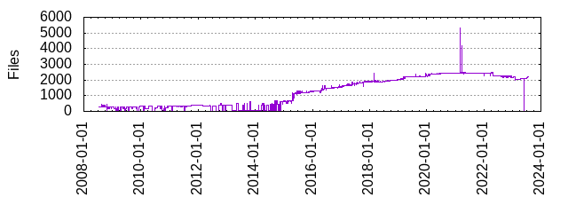

Files
- Total files
- 2208
- Total lines
- 904889
- Average file size
- 16183.62 bytes

| Extension | Files (%) | Lines (%) | Lines/file |
|---|
| 51 (2.31%) | 2806 (0.31%) | 55 |
| BUILD | 2 (0.09%) | 107 (0.01%) | 53 |
| Config | 1 (0.05%) | 7 (0.00%) | 7 |
| awk | 3 (0.14%) | 254 (0.03%) | 84 |
| bat | 4 (0.18%) | 106 (0.01%) | 26 |
| bazel | 51 (2.31%) | 9564 (1.06%) | 187 |
| bazelrc | 5 (0.23%) | 59 (0.01%) | 11 |
| bzl | 24 (1.09%) | 3566 (0.39%) | 148 |
| c | 35 (1.59%) | 42127 (4.66%) | 1203 |
| cc | 312 (14.13%) | 216850 (23.96%) | 695 |
| cfg | 1 (0.05%) | 2 (0.00%) | 2 |
| cmake | 18 (0.82%) | 1888 (0.21%) | 104 |
| cpp | 2 (0.09%) | 237 (0.03%) | 118 |
| cs | 204 (9.24%) | 150433 (16.62%) | 737 |
| csproj | 7 (0.32%) | 175 (0.02%) | 25 |
| dart | 2 (0.09%) | 114 (0.01%) | 57 |
| dict | 1 (0.05%) | 7 (0.00%) | 7 |
| dist | 1 (0.05%) | 23 (0.00%) | 23 |
| el | 1 (0.05%) | 217 (0.02%) | 217 |
| gemspec | 1 (0.05%) | 40 (0.00%) | 40 |
| go | 4 (0.18%) | 372 (0.04%) | 93 |
| golden | 1 (0.05%) | 20 (0.00%) | 20 |
| h | 332 (15.04%) | 135586 (14.98%) | 408 |
| in | 6 (0.27%) | 338 (0.04%) | 56 |
| inc | 10 (0.45%) | 17845 (1.97%) | 1784 |
| ini | 1 (0.05%) | 21 (0.00%) | 21 |
| java | 258 (11.68%) | 123177 (13.61%) | 477 |
| json | 5 (0.23%) | 1040 (0.11%) | 208 |
| kt | 21 (0.95%) | 3717 (0.41%) | 177 |
| la | 1 (0.05%) | 51 (0.01%) | 51 |
| m | 76 (3.44%) | 66257 (7.32%) | 871 |
| m4 | 1 (0.05%) | 11 (0.00%) | 11 |
| map | 3 (0.14%) | 36 (0.00%) | 12 |
| md | 36 (1.63%) | 5144 (0.57%) | 142 |
| mm | 1 (0.05%) | 66 (0.01%) | 66 |
| mod | 1 (0.05%) | 5 (0.00%) | 5 |
| nuspec | 1 (0.05%) | 38 (0.00%) | 38 |
| patch | 1 (0.05%) | 11 (0.00%) | 11 |
| pb | 1 (0.05%) | 27533 (3.04%) | 27533 |
| pbxproj | 3 (0.14%) | 3411 (0.38%) | 1137 |
| pddm | 1 (0.05%) | 1043 (0.12%) | 1043 |
| pgcfg | 1 (0.05%) | 8 (0.00%) | 8 |
| php | 143 (6.48%) | 28224 (3.12%) | 197 |
| phpt | 1 (0.05%) | 9 (0.00%) | 9 |
| plist | 4 (0.18%) | 44 (0.00%) | 11 |
| podspec | 2 (0.09%) | 90 (0.01%) | 45 |
| props | 1 (0.05%) | 7 (0.00%) | 7 |
| proto | 251 (11.37%) | 29785 (3.29%) | 118 |
| ps1 | 1 (0.05%) | 20 (0.00%) | 20 |
| py | 72 (3.26%) | 33947 (3.75%) | 471 |
| rake | 1 (0.05%) | 94 (0.01%) | 94 |
| rb | 51 (2.31%) | 11570 (1.28%) | 226 |
| rs | 18 (0.82%) | 3590 (0.40%) | 199 |
| rst | 26 (1.18%) | 589 (0.07%) | 22 |
| sh | 31 (1.40%) | 1922 (0.21%) | 62 |
| sln | 1 (0.05%) | 54 (0.01%) | 54 |
| snk | 2 (0.09%) | 3 (0.00%) | 1 |
| sum | 1 (0.05%) | 6 (0.00%) | 6 |
| supp | 1 (0.05%) | 33 (0.00%) | 33 |
| swift | 1 (0.05%) | 460 (0.05%) | 460 |
| targets | 1 (0.05%) | 11 (0.00%) | 11 |
| txt | 46 (2.08%) | 3172 (0.35%) | 68 |
| vim | 1 (0.05%) | 105 (0.01%) | 105 |
| w32 | 1 (0.05%) | 14 (0.00%) | 14 |
| xcscheme | 6 (0.27%) | 1415 (0.16%) | 235 |
| xcsettings | 3 (0.14%) | 24 (0.00%) | 8 |
| xml | 30 (1.36%) | 2275 (0.25%) | 75 |
| yaml | 1 (0.05%) | 5 (0.00%) | 5 |
| yml | 20 (0.91%) | 1902 (0.21%) | 95 |